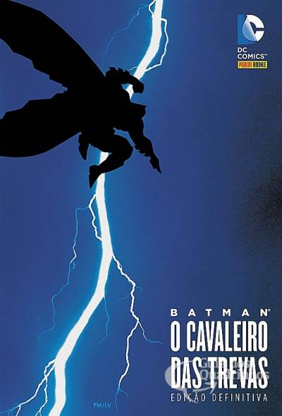
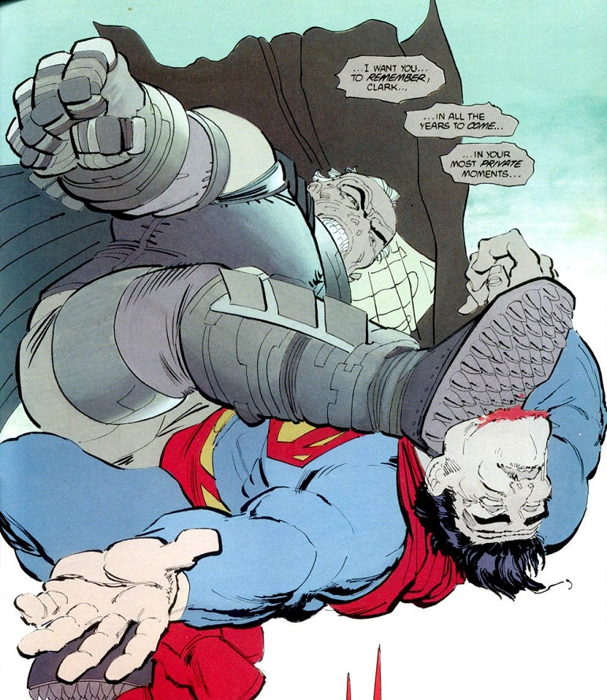

Batman: O Cavaleiro das Trevas – 40 anos de uma obra prima
Publicado em 02 de março de 2026

Lançada em 1986, "Batman: O Cavaleiro das Trevas" (The Dark Knight Returns), de Frank Miller, não é apenas uma história em quadrinhos; é o divisor de águas que arrancou o herói do "camp" colorido dos anos 60 e o jogou na brutalidade do realismo psicológico.
1. O Contexto Histórico e a Desconstrução
Antes de Miller, o Batman era frequentemente associado à série de TV satírica de Adam West. Miller, junto com Alan Moore (Watchmen), mudou o paradigma da indústria ao introduzir o conceito de desconstrução.
O Batman Envelhecido: Bruce Wayne tem 55 anos, está aposentado há uma década e é um homem amargurado. A "fera" interior está sufocada, mas não morta.
A Crítica Social: A obra é uma sátira feroz da era Reagan, da Guerra Fria e da obsessão da mídia pelo sensacionalismo.
2. Estrutura Narrativa e Arte
A arte de Miller (com cores de Lynn Varley e arte-final de Klaus Janson) é propositalmente densa e claustrofóbica.
O Uso das Telas de TV: Miller utiliza pequenos quadros que simulam telas de televisão para mostrar como a opinião pública é manipulada. Isso cria um ritmo frenético e fragmentado.
Decomposição do Quadro: Diferente das páginas limpas da Era de Prata, aqui os quadros são apertados, refletindo a pressão psicológica de Bruce e o caos de Gotham.
3. Os Três Pilares do Conflito
A HQ é dividida em quatro partes, focando em antagonistas que representam diferentes facetas do fracasso social:
1. Duas-Caras O fracasso da reabilitação e a dualidade incurável de Gotham.
2. Líder Mutante A nova violência urbana: irracional, jovem e desprovida de códigos de honra.
Coringa O niilismo puro. Ele só "acorda" do catatonismo porque Batman voltou; um não existe sem o outro.
Superman O "escoteiro" que se tornou um peão do governo. Representa o conformismo contra a rebeldia de Batman.

4. Batman vs. Superman: O Embate Ideológico
O clímax no beco do crime é o momento mais icônico da nona arte. Não é apenas uma luta física, mas um debate sobre liberdade vs. ordem.
"Eu quero que você se lembre, Clark... em todos os anos que virão... em seus momentos mais privados... eu quero que você se lembre da minha mão na sua garganta... eu quero que você se lembre do único homem que te venceu."
5. Legado e Impacto
Sem esta obra, o Batman moderno de Christopher Nolan ou Matt Reeves simplesmente não existiria. Miller provou que quadrinhos podiam tratar de política, filosofia e decadência urbana para um público adulto.
O Cavaleiro das Trevas é uma celebração da vontade humana. É a história de um homem que se recusa a morrer ou a ser esquecido enquanto o mundo ao seu redor apodrece. É visceral, política e, acima de tudo, necessária para entender a cultura pop atual.